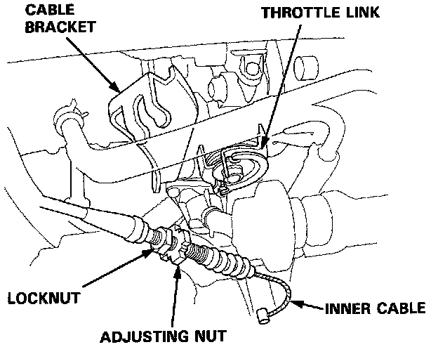
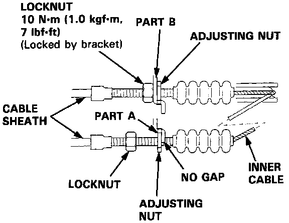

Throttle Cable/Linkage: Service and Repair
Throttle Cable:

1. Fully open the throttle valve, then install the throttle cable in the throttle linkage and install the cable housing in the cable bracket.
2. Start the engine. Hold the engine at 3,000 rpm with no load in neutral until the radiator fan comes on, then let it idle.
3. With part A of the cable bracket, support the cable sheath so that there is no inner wire free play. Turn the adjusting nut until it touches part A, leaving a gap between the locknut and adjusting nut.
Throttle Cable:

4. Move the cable sheath to part B of the cable bracket that so the bracket slides into the gap between the locknut and adjusting nut. Tighten the locknut.
5. The cable deflection should now be 10-12 mm (0.39-0.47 in.). If not, see Inspection/Adjustment.